Segmentación contra las máscaras manuales
Izquierda: manual, amarillo = vaca objetivo (inst0), azul = otras. Paneles de modelo: verde = máscara que el pipeline usaría (mayor área), magenta = otras detecciones, contorno rojo = vaca de referencia que nadie recuperó con IoU ≥ 0.5.
preentrenado = yolo26n-seg.pt (clase 19, sha256 361fbfabab285c32…); afinado_jun10 = yolo26n-seg-finetuned.pt (clase 0, sha256 d6c65749431c100b…)
Resumen total
| modelo | n | eligió objetivo % | sin detección | IoU objetivo | err área % | |err área| % | IoU emparejado | recall inst | FP |
|---|
| preentrenado | 40 | 92.5 | 1 | 0.851 | 4.1 | 9.1 | 0.759 | 0.846 | 16 |
| afinado_jun10 | 40 | 82.5 | 6 | 0.725 | -13.2 | 21.1 | 0.5 | 0.569 | 1 |
Resumen facil
| modelo | n | eligió objetivo % | sin detección | IoU objetivo | err área % | |err área| % | IoU emparejado | recall inst | FP |
|---|
| preentrenado | 15 | 100.0 | 0 | 0.929 | 4.2 | 4.2 | 0.929 | 1.0 | 5 |
| afinado_jun10 | 15 | 93.3 | 1 | 0.83 | -8.4 | 8.9 | 0.83 | 0.933 | 1 |
Resumen media
| modelo | n | eligió objetivo % | sin detección | IoU objetivo | err área % | |err área| % | IoU emparejado | recall inst | FP |
|---|
| preentrenado | 15 | 86.7 | 0 | 0.78 | 10.7 | 10.7 | 0.579 | 0.691 | 9 |
| afinado_jun10 | 15 | 86.7 | 1 | 0.756 | 3.0 | 17.5 | 0.275 | 0.316 | 0 |
Resumen dificil
| modelo | n | eligió objetivo % | sin detección | IoU objetivo | err área % | |err área| % | IoU emparejado | recall inst | FP |
|---|
| preentrenado | 10 | 90.0 | 1 | 0.841 | -5.9 | 14.1 | 0.774 | 0.85 | 2 |
| afinado_jun10 | 10 | 60.0 | 4 | 0.52 | -44.7 | 44.7 | 0.343 | 0.4 | 0 |
facil
5_06_ford · FORD · 1 vaca(s)
preentrenado: objetivo SI, IoU 0.929, área +4.8%, recall 1.00, FP 0 · afinado_jun10: objetivo NO, IoU 0.000, área -100.0%, recall 0.00, FP 0
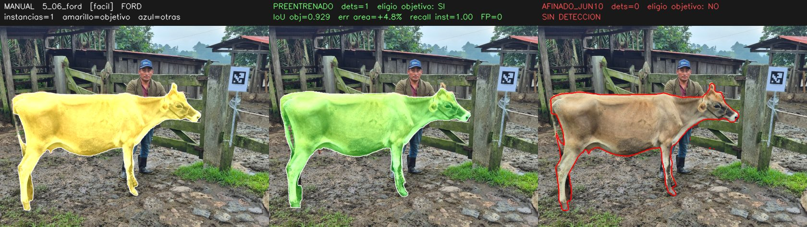
5_06_zafiro · ZAFIRO · 1 vaca(s)
preentrenado: objetivo SI, IoU 0.924, área +6.2%, recall 1.00, FP 1 · afinado_jun10: objetivo SI, IoU 0.856, área -4.7%, recall 1.00, FP 0
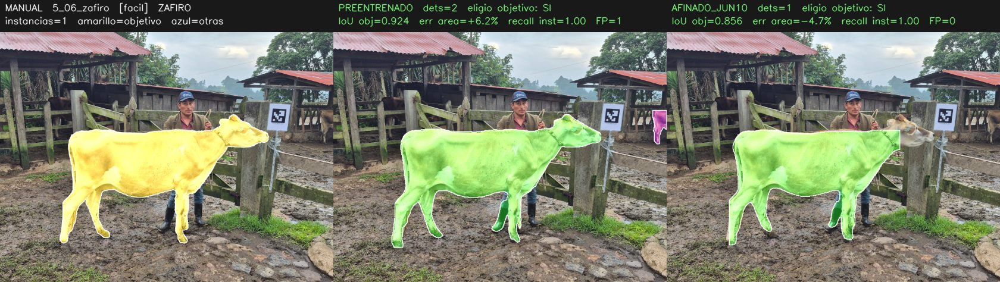
5_06_selena · SELENA · 1 vaca(s)
preentrenado: objetivo SI, IoU 0.945, área +4.9%, recall 1.00, FP 0 · afinado_jun10: objetivo SI, IoU 0.878, área -1.2%, recall 1.00, FP 0
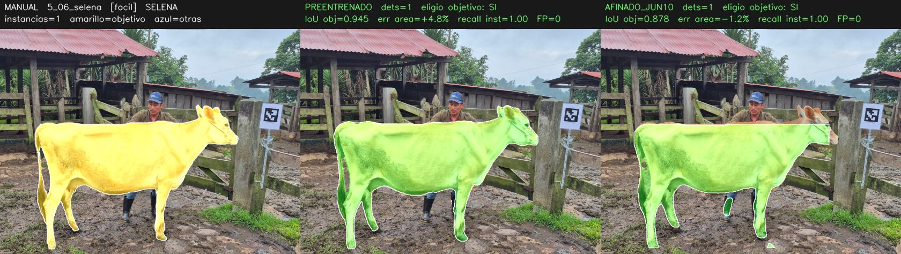
5_06_nohelia · NOHELIA · 1 vaca(s)
preentrenado: objetivo SI, IoU 0.928, área +3.3%, recall 1.00, FP 0 · afinado_jun10: objetivo SI, IoU 0.865, área -4.5%, recall 1.00, FP 0
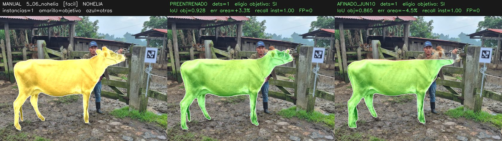
5_06_perla · PERLA · 1 vaca(s)
preentrenado: objetivo SI, IoU 0.937, área +4.4%, recall 1.00, FP 1 · afinado_jun10: objetivo SI, IoU 0.889, área -3.6%, recall 1.00, FP 0
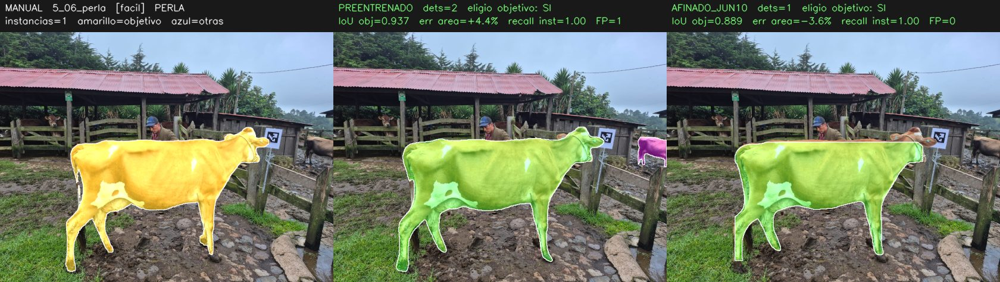
5_06_martita · MARTITA · 1 vaca(s)
preentrenado: objetivo SI, IoU 0.914, área +8.6%, recall 1.00, FP 0 · afinado_jun10: objetivo SI, IoU 0.874, área -3.9%, recall 1.00, FP 0
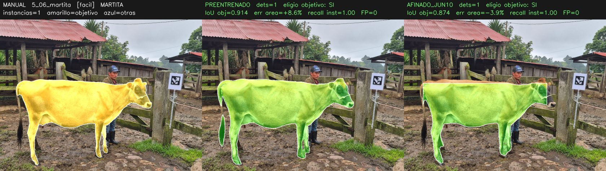
5_06_martinica · MARTINICA · 1 vaca(s)
preentrenado: objetivo SI, IoU 0.938, área +4.2%, recall 1.00, FP 0 · afinado_jun10: objetivo SI, IoU 0.900, área -1.7%, recall 1.00, FP 0
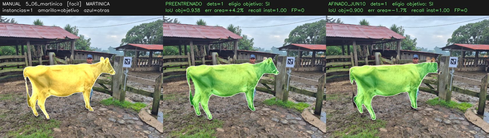
5_06_nohemi · NOHEMI · 1 vaca(s)
preentrenado: objetivo SI, IoU 0.920, área +4.0%, recall 1.00, FP 0 · afinado_jun10: objetivo SI, IoU 0.883, área -2.2%, recall 1.00, FP 0
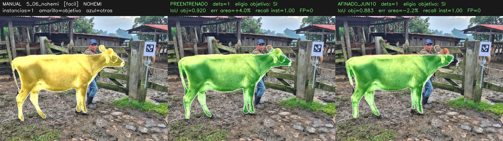
5_06_cristy · CRISTY · 1 vaca(s)
preentrenado: objetivo SI, IoU 0.924, área +4.3%, recall 1.00, FP 1 · afinado_jun10: objetivo SI, IoU 0.893, área -2.4%, recall 1.00, FP 0
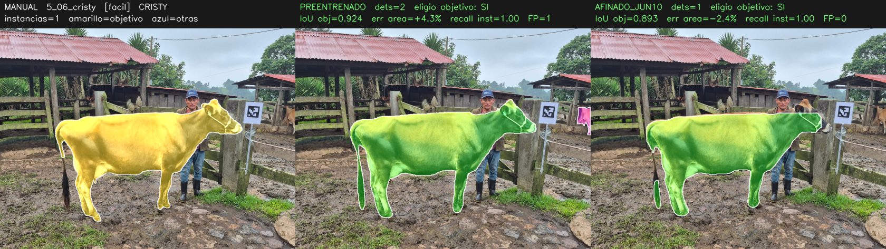
5_06_oscarina · OSCARINA · 1 vaca(s)
preentrenado: objetivo SI, IoU 0.910, área +2.0%, recall 1.00, FP 0 · afinado_jun10: objetivo SI, IoU 0.880, área +3.2%, recall 1.00, FP 0
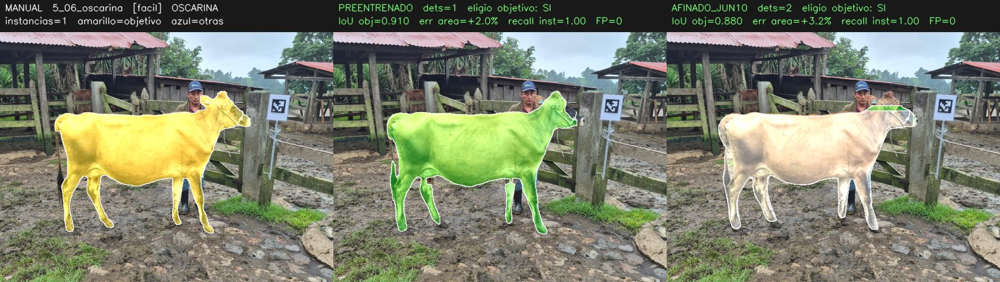
5_06_lubianca · LUBIANCA · 1 vaca(s)
preentrenado: objetivo SI, IoU 0.922, área +3.9%, recall 1.00, FP 0 · afinado_jun10: objetivo SI, IoU 0.892, área -3.8%, recall 1.00, FP 0
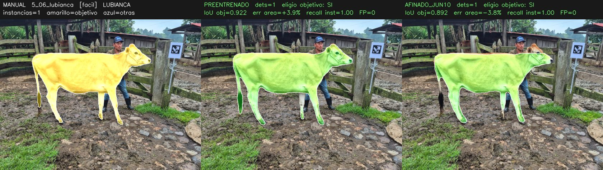
5_06_karina · KARINA · 1 vaca(s)
preentrenado: objetivo SI, IoU 0.940, área +1.2%, recall 1.00, FP 1 · afinado_jun10: objetivo SI, IoU 0.911, área +0.0%, recall 1.00, FP 1
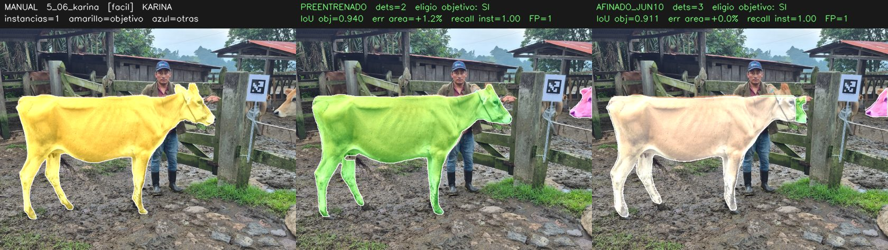
5_06_chiquita · CHIQUITA · 1 vaca(s)
preentrenado: objetivo SI, IoU 0.932, área +6.4%, recall 1.00, FP 0 · afinado_jun10: objetivo SI, IoU 0.904, área -1.7%, recall 1.00, FP 0
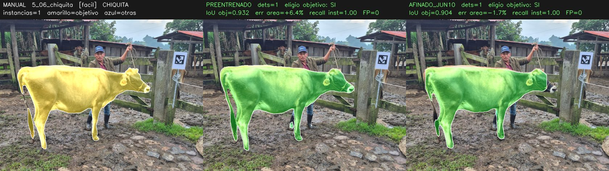
5_06_mariquita · MARIQUITA · 1 vaca(s)
preentrenado: objetivo SI, IoU 0.931, área +2.0%, recall 1.00, FP 0 · afinado_jun10: objetivo SI, IoU 0.904, área +0.4%, recall 1.00, FP 0
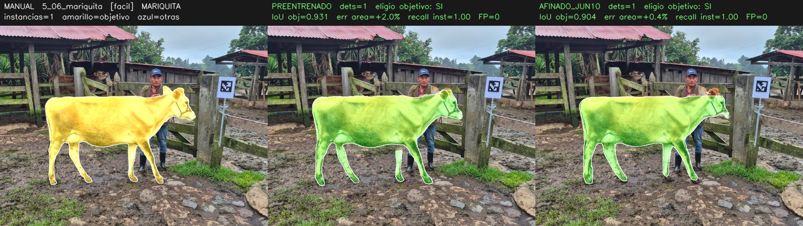
5_06_odra · ODRA · 1 vaca(s)
preentrenado: objetivo SI, IoU 0.935, área +3.2%, recall 1.00, FP 1 · afinado_jun10: objetivo SI, IoU 0.921, área +0.2%, recall 1.00, FP 0
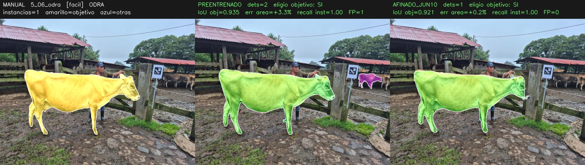
media
burst_estrellita_01 · ESTRELLITA · 5 vaca(s)
preentrenado: objetivo SI, IoU 0.819, área +19.9%, recall 0.80, FP 1 · afinado_jun10: objetivo NO, IoU 0.000, área -100.0%, recall 0.00, FP 0
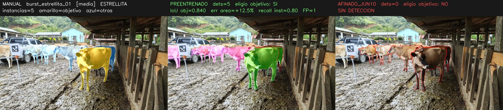
burst_estrellita_02 · ESTRELLITA · 4 vaca(s)
preentrenado: objetivo SI, IoU 0.899, área +8.6%, recall 0.50, FP 1 · afinado_jun10: objetivo SI, IoU 0.814, área +18.3%, recall 0.25, FP 0
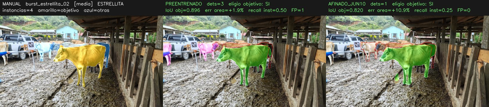
burst_taty_01 · TATY · 8 vaca(s)
preentrenado: objetivo SI, IoU 0.885, área +8.6%, recall 0.50, FP 0 · afinado_jun10: objetivo SI, IoU 0.813, área +8.6%, recall 0.12, FP 0
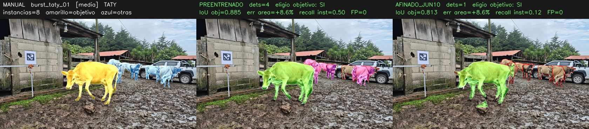
12_06_damita · DAMITA · 1 vaca(s)
preentrenado: objetivo SI, IoU 0.944, área +4.4%, recall 1.00, FP 0 · afinado_jun10: objetivo SI, IoU 0.887, área -5.5%, recall 1.00, FP 0
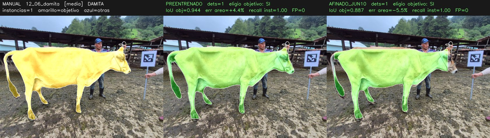
burst_ambar_03 · AMBAR · 5 vaca(s)
preentrenado: objetivo SI, IoU 0.903, área +0.5%, recall 0.60, FP 2 · afinado_jun10: objetivo SI, IoU 0.853, área +10.5%, recall 0.20, FP 0
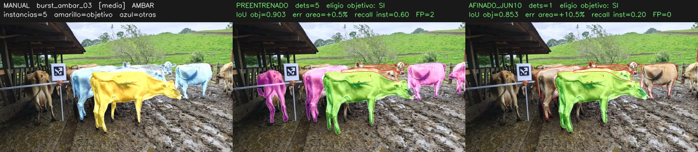
12_06_anita · ANITA · 2 vaca(s)
preentrenado: objetivo SI, IoU 0.942, área +1.7%, recall 0.50, FP 0 · afinado_jun10: objetivo SI, IoU 0.900, área -2.7%, recall 0.50, FP 0
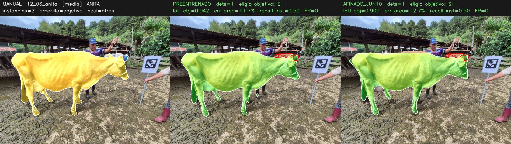
burst_karina_02 · KARINA · 2 vaca(s)
preentrenado: objetivo SI, IoU 0.936, área +3.3%, recall 1.00, FP 0 · afinado_jun10: objetivo SI, IoU 0.898, área +1.8%, recall 0.50, FP 0
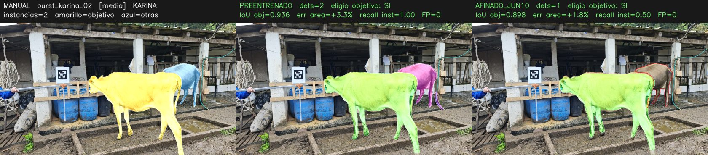
burst_taty_02 · TATY · 11 vaca(s)
preentrenado: objetivo SI, IoU 0.899, área +1.8%, recall 0.36, FP 1 · afinado_jun10: objetivo SI, IoU 0.871, área +2.8%, recall 0.09, FP 0
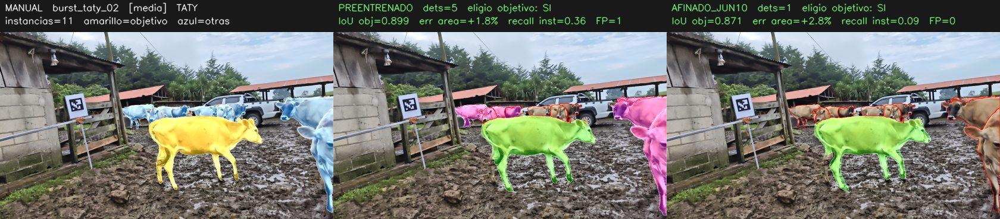
burst_estrellita_03 · ESTRELLITA · 5 vaca(s)
preentrenado: objetivo SI, IoU 0.850, área +13.4%, recall 0.20, FP 1 · afinado_jun10: objetivo SI, IoU 0.823, área +17.0%, recall 0.20, FP 0
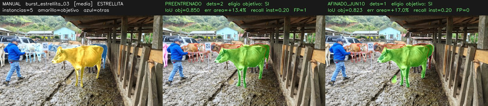
burst_karina_01 · KARINA · 2 vaca(s)
preentrenado: objetivo SI, IoU 0.916, área +3.5%, recall 1.00, FP 0 · afinado_jun10: objetivo SI, IoU 0.890, área +5.1%, recall 0.50, FP 0
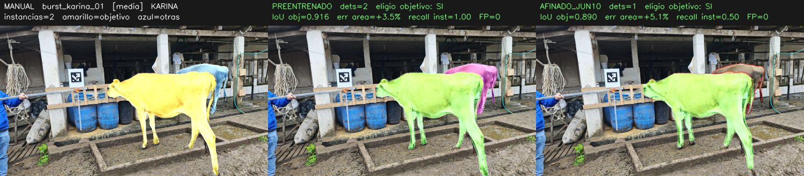
burst_ambar_01 · AMBAR · 5 vaca(s)
preentrenado: objetivo SI, IoU 0.926, área +0.9%, recall 1.00, FP 1 · afinado_jun10: objetivo SI, IoU 0.908, área -0.8%, recall 0.20, FP 0
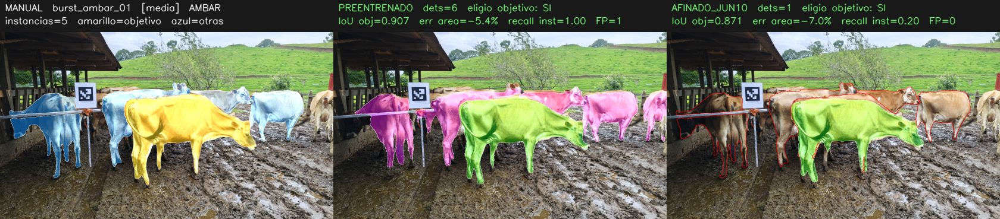
burst_ambar_02 · AMBAR · 5 vaca(s)
preentrenado: objetivo SI, IoU 0.848, área +7.4%, recall 0.80, FP 1 · afinado_jun10: objetivo SI, IoU 0.831, área +6.5%, recall 0.20, FP 0
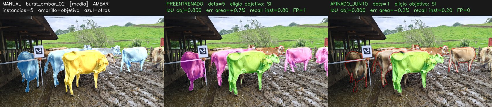
burst_odra_01 · ODRA · 2 vaca(s)
preentrenado: objetivo SI, IoU 0.924, área +5.0%, recall 1.00, FP 0 · afinado_jun10: objetivo SI, IoU 0.914, área +3.2%, recall 0.50, FP 0
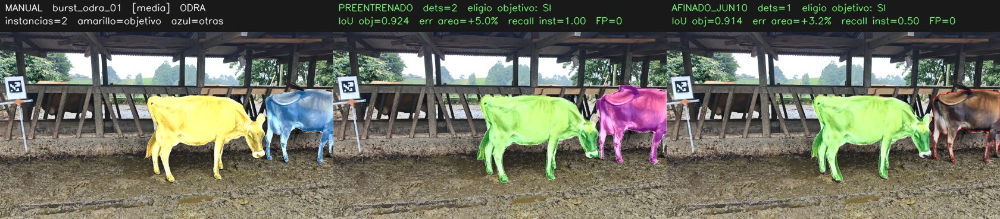
burst_nahomi_02 · NAHOMI · 6 vaca(s)
preentrenado: objetivo NO, IoU 0.000, área +55.3%, recall 0.67, FP 0 · afinado_jun10: objetivo NO, IoU 0.066, área +73.6%, recall 0.33, FP 0
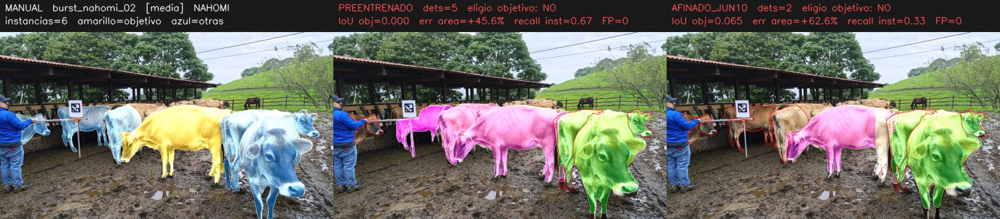
burst_nahomi_01 · NAHOMI · 7 vaca(s)
preentrenado: objetivo NO, IoU 0.000, área +27.0%, recall 0.43, FP 1 · afinado_jun10: objetivo SI, IoU 0.874, área +6.4%, recall 0.14, FP 0
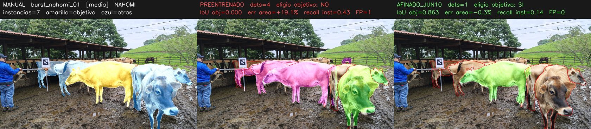
dificil
12_06_selena · SELENA · 1 vaca(s)
preentrenado: objetivo SI, IoU 0.952, área +3.5%, recall 1.00, FP 1 · afinado_jun10: objetivo NO, IoU 0.000, área -100.0%, recall 0.00, FP 0
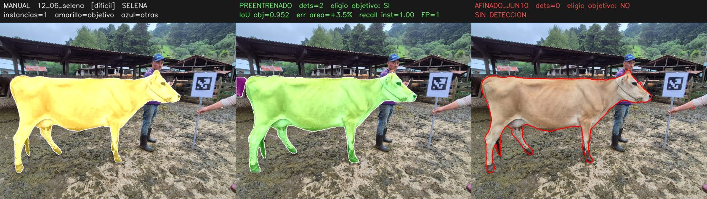
12_06_nohemi · NOHEMI · 1 vaca(s)
preentrenado: objetivo SI, IoU 0.942, área +2.7%, recall 1.00, FP 0 · afinado_jun10: objetivo NO, IoU 0.000, área -100.0%, recall 0.00, FP 0
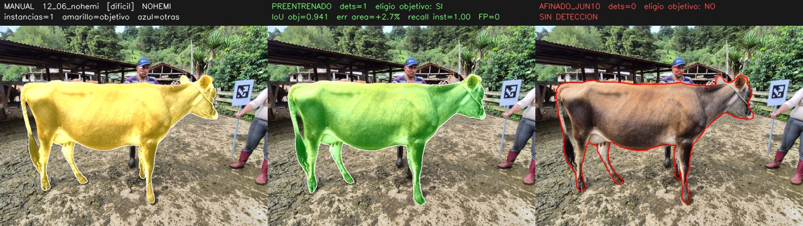
12_06_mariquita · MARIQUITA · 2 vaca(s)
preentrenado: objetivo SI, IoU 0.922, área +4.0%, recall 0.50, FP 0 · afinado_jun10: objetivo NO, IoU 0.000, área -100.0%, recall 0.00, FP 0
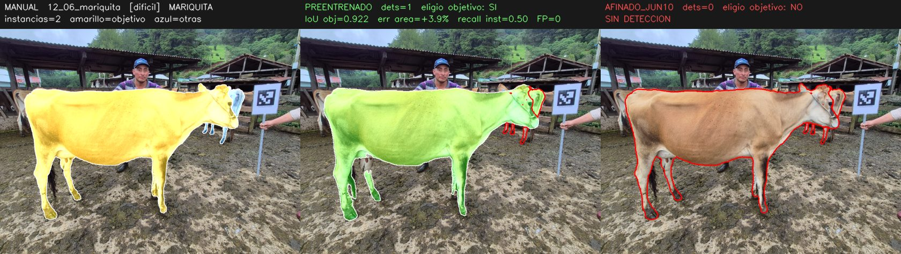
12_06_oscarina · OSCARINA · 1 vaca(s)
preentrenado: objetivo SI, IoU 0.934, área +3.8%, recall 1.00, FP 0 · afinado_jun10: objetivo SI, IoU 0.801, área -16.0%, recall 1.00, FP 0
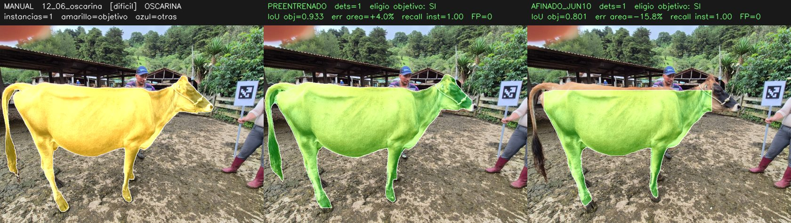
12_06_diagira · DIAGIRA · 1 vaca(s)
preentrenado: objetivo SI, IoU 0.934, área +5.8%, recall 1.00, FP 1 · afinado_jun10: objetivo SI, IoU 0.852, área -6.4%, recall 1.00, FP 0
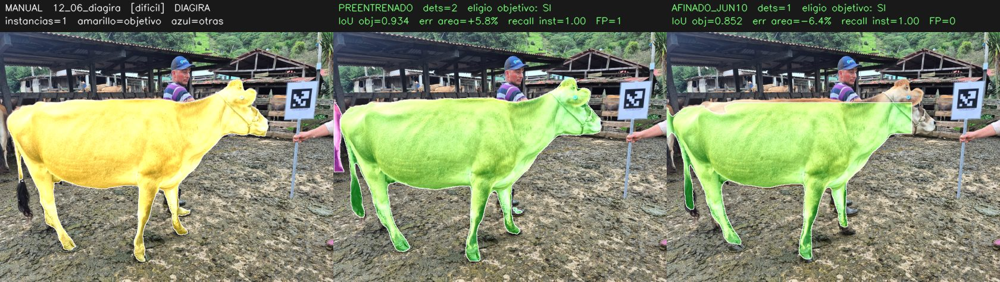
12_06_chaparrita · CHAPARRITA · 2 vaca(s)
preentrenado: objetivo SI, IoU 0.929, área +4.9%, recall 1.00, FP 0 · afinado_jun10: objetivo SI, IoU 0.851, área -10.4%, recall 0.50, FP 0
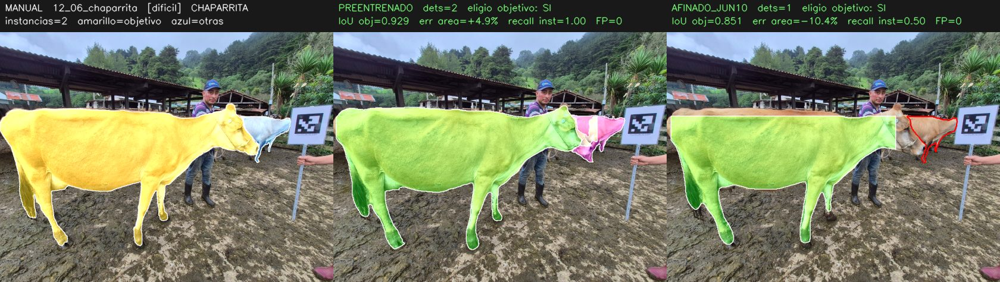
12_06_lubianca · LUBIANCA · 2 vaca(s)
preentrenado: objetivo SI, IoU 0.945, área +4.1%, recall 1.00, FP 0 · afinado_jun10: objetivo SI, IoU 0.894, área -4.7%, recall 0.50, FP 0
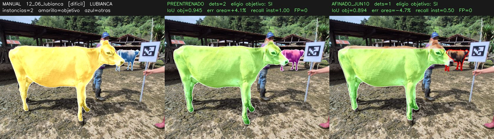
12_06_mafer · MAFER · 2 vaca(s)
preentrenado: objetivo SI, IoU 0.911, área +9.5%, recall 1.00, FP 0 · afinado_jun10: objetivo SI, IoU 0.866, área -9.4%, recall 0.50, FP 0
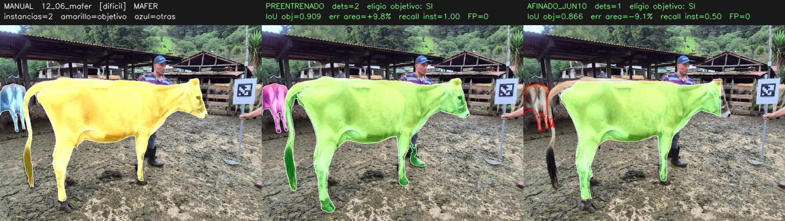
12_06_zafiro · ZAFIRO · 2 vaca(s)
preentrenado: objetivo SI, IoU 0.944, área +2.5%, recall 1.00, FP 0 · afinado_jun10: objetivo SI, IoU 0.939, área -0.2%, recall 0.50, FP 0
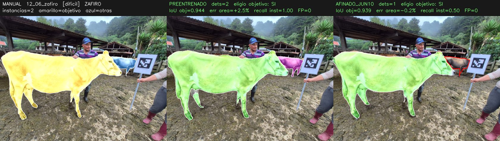
12_06_karina · KARINA · 1 vaca(s)
preentrenado: objetivo NO, IoU 0.000, área -100.0%, recall 0.00, FP 0 · afinado_jun10: objetivo NO, IoU 0.000, área -100.0%, recall 0.00, FP 0
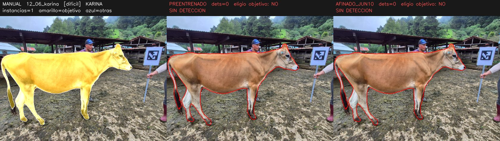